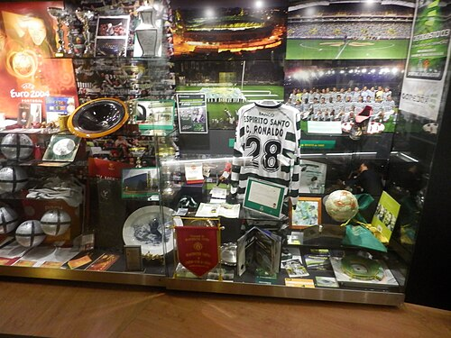

In July 2002, coach László Bölöni, impressed by Ronaldo's dribbling[38], invited him to take part in the first team's pre-season friendlies. Sporting defeated Rio Maior 5–0. Following that match, Bölöni decided to shift Ronaldo from central midfield to the wing to better utilize his speed. On August 3, in a friendly against Real Betis, Cristiano came on as a substitute and scored a goal, helping his team secure a 3–2 victory[39]. During this same period, he played for the Portugal national team at the UEFA European Under-17 Championship[40]. On August 14, Cristiano made his official debut for the club in a Champions League qualifying match against Inter Milan[41].

On August 18, 2002, he won the first trophy of his professional club career, the Portuguese Super Cup, but he was unable to take part in the match. On October 7, Ronaldo made his first start in the Portuguese championship match against Moreirense. Cristiano scored twice and helped the club win 3-0. At the age of 17 years, 8 months and 2 days, he became the youngest goalscorer in the history of Sporting [41]. During the season, 17-year-old Ronaldo was noticed by then Liverpool head coach Gerard Houllier, but the Merseysiders did not dare to sign a contract with the Portuguese, considering that he was still too young and needed time